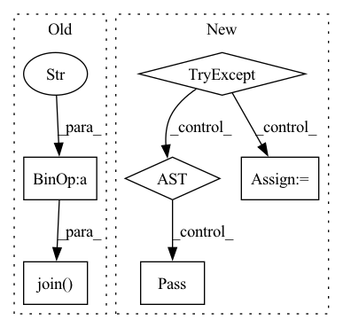

Pattern ID :35686

Before Change
class LossHistory():
def __init__(self, log_dir, model, input_shape):
time_str = datetime.datetime.strftime(datetime.datetime.now(),"%Y_%m_%d_%H_%M_%S")
self.log_dir = os.path.join(log_dir, "loss_" + str(time_str))
self.losses = []
self.val_loss = []
After Change
os.makedirs(self.log_dir)
self.writer = SummaryWriter(self.log_dir)
try:
dummy_input = torch.randn(2, 3, input_shape[0], input_shape[1])
self.writer.add_graph(model, dummy_input)
except:
pass
def append_loss(self, epoch, loss, val_loss):
if not os.path.exists(self.log_dir):
In pattern: SUPERPATTERN
Frequency: 3
Non-data size: 6
Instances
Fragment ID: 101574077
Project Name: bubbliiiing/efficientdet-pytorch
Commit Name: 1fd4f8e549b84e99d93fa05c76adc955fa6223f5
Time: 2022-05-19
Author: 3323290568@qq.com
File Name: utils/callbacks.py
M Class Name: LossHistory
N Class Name: LossHistory
M Method Name: __init__(4)
N Method Name: __init__(4)
M Parent Class:
N Parent Class:
M File Name: utils/callbacks.py
N File Name: utils/callbacks.py
M Start Line: 14
M End Line: 15
N Start Line: 24
N End Line: 36
'>
Before Change
class LossHistory():
def __init__(self, log_dir, model, input_shape):
time_str = datetime.datetime.strftime(datetime.datetime.now(),"%Y_%m_%d_%H_%M_%S")
self.log_dir = os.path.join(log_dir, "loss_" + str(time_str))
self.losses = []
self.val_loss = []
After Change
os.makedirs(self.log_dir)
self.writer = SummaryWriter(self.log_dir)
try:
dummy_input = torch.randn(2, 3, input_shape[0], input_shape[1])
self.writer.add_graph(model, dummy_input)
except:
pass
def append_loss(self, epoch, loss, val_loss):
if not os.path.exists(self.log_dir):
'>
Fragment ID: 101574076
Project Name: bubbliiiing/retinanet-pytorch
Commit Name: b94f6cb7ab028c9454e82d1b82b8dd44d27256bc
Time: 2022-05-14
Author: 3323290568@qq.com
File Name: utils/callbacks.py
M Class Name: LossHistory
N Class Name: LossHistory
M Method Name: __init__(4)
N Method Name: __init__(4)
M Parent Class:
N Parent Class:
M File Name: utils/callbacks.py
N File Name: utils/callbacks.py
M Start Line: 14
M End Line: 15
N Start Line: 24
N End Line: 36
'>
Before Change
first = self.get_data(name=name, is_text=False)
name = "author"
authors = first.find_all(name=name)
self.Authors = ", ".join([elt.find(name="forename").text + " " + elt.find(name="surname").text for elt in authors])
def get_year(self):
name = "date"
attrs = {"type": "published"}
After Change
authors = first.find_all(name=name)
result = []
for elt in authors:
try:
fname = elt.find(name="forename").text
lname = elt.find(name="surname").text
result.append(fname + " " + lname)
except:
pass
if result:
self.Authors = ", ".join(result)
else:
self.Authors = ""
'>
Fragment ID: 101574078
Project Name: yassinekdi/naimai
Commit Name: 82bd0aa6d11b2e07bc41fac417ae81307ad0f8e3
Time: 2022-07-21
Author: keptsa@yahoo.fr
File Name: papers/full_text/pdf_paper_grobid.py
M Class Name: paper_grobid
N Class Name: paper_grobid
M Method Name: get_Authors(1)
N Method Name: get_Authors(1)
M Parent Class: paper_full_base
N Parent Class: paper_full_base
M File Name: papers/full_text/pdf_paper_grobid.py
N File Name: papers/full_text/pdf_paper_grobid.py
M Start Line: 70
M End Line: 71
N Start Line: 87
N End Line: 101